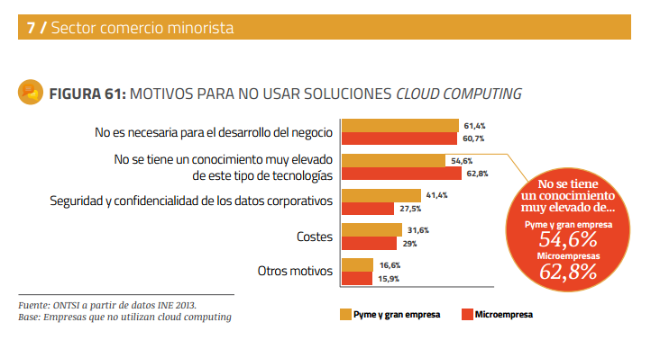
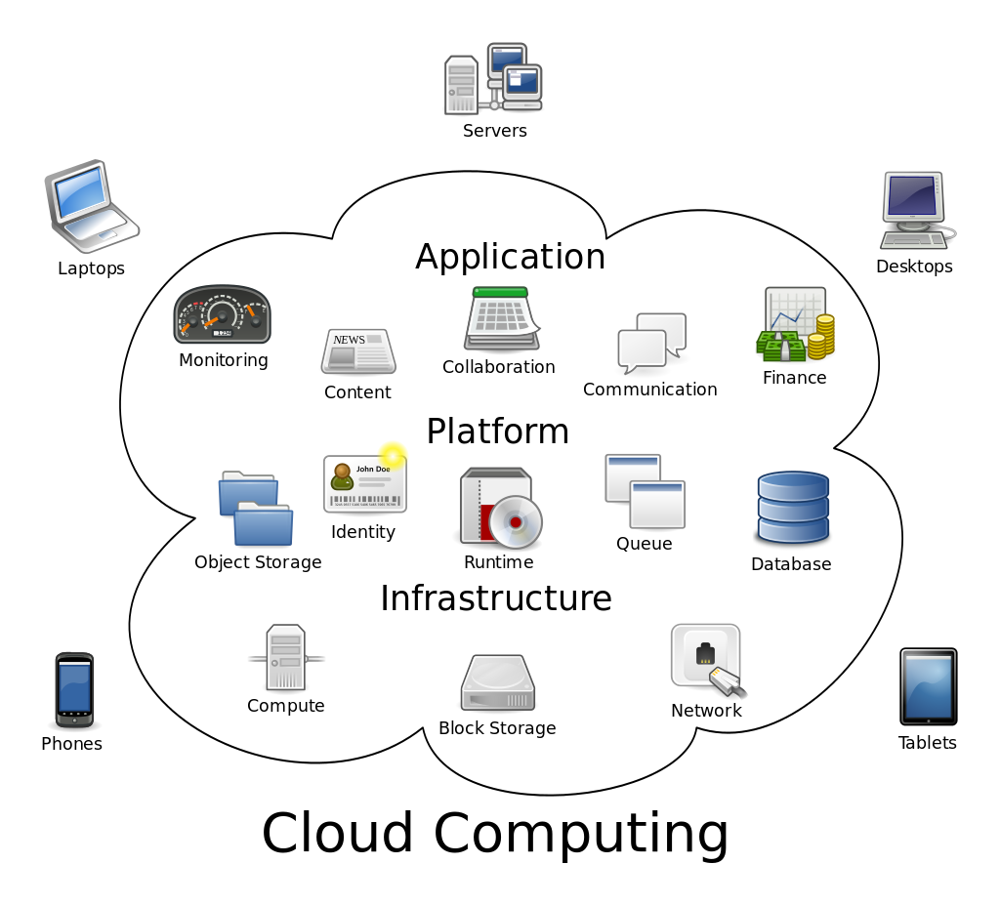
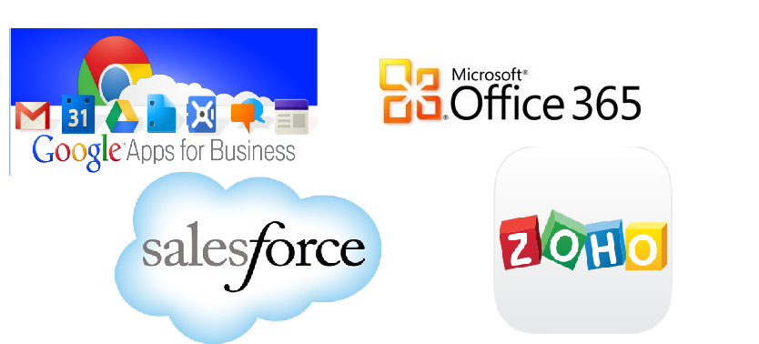
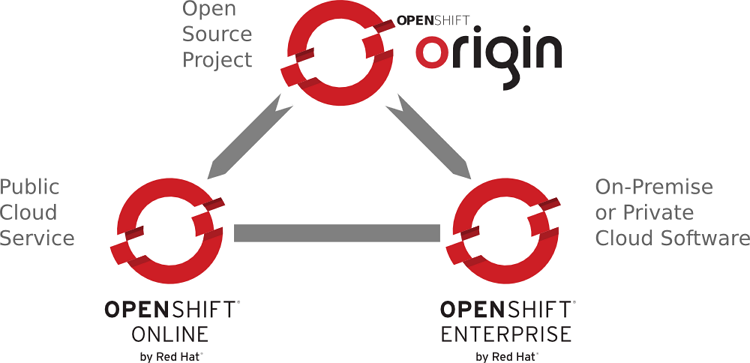

Servidores Web y PaaS
Sesión 5: Introducción a Cloud Computing y a OpenShift
Índice
- ¿Qué es Cloud Computing?
- ¿Qué aporta?
- ONTSI
- Tipos de Cloud
- Seguridad
- OpenShift
» ¿Qué es Cloud Computing?
Cloud Computing es una denominación comercial a un modelo de computación que permite utilizar recursos tecnológicos bajo demanda, ofrecidos por un proveedor.
- Contrapuesto al modelo tradicional de adquisición y administración de recursos.
- Las tecnologías no son nuevas, lo novedoso es el modelo de negocio.
Computación pre-cloud
- Fuerte inversión previa en HW, SW, comunicaciones...
- Se requiere sobredimensionar el hardware:
- Amortización de la inversión durante un mínimo de tiempo.
- Respuesta a picos de carga.
- En resumen: Costes iniciales elevados y bajo aprovechamiento de los recursos.
» ¿Qué aporta Cloud Computing?
- Flexibilidad
- Estandarización y reusabilidad
- Eficiencia (sobre los recursos contratados)
- Acceso ubicuo
- Seguridad
- Ahorro de costes iniciales
Nuevos conceptos de Cloud Computing
Terminología mitad técnico y comercial:
- Multitenancy (tenencia múltiple)
- Resiliency
Riesgos de Cloud Computing
- ¿Cómo aplico cloud computing en mi proyecto?
- Dependencias de terceros: proveedor de servicios.
- Falta de transparencia
- Falta de control
- Gestión de datos de carácter personal.
» Informe ONTSI Mayo 2014
(Observatorio Nacional de Telecomunicaciones y Sistemas de Información)


» Tipos de Cloud Computing - Servicio

SaaS (Software as a Service)
- Dirigido a usuarios finales.
- Solo se necesita conectividad.
- El usuario no tiene ningún control sobre aspectos técnicos del producto.

PaaS (Platform as a Service)
- Proporciona una serie de módulos estándar (BBDD, servidores) sobre los que desplegar aplicaciones.
- Dirigido a desarrolladores.
- El usuario tiene acceso a la configuración de los módulos contratados.
- El usuario se abstrae del mantenimiento de la infraestructura: sistemas operativos, comunicaciones...
PaaS (Platform as a Service)
IaaS (Infrastructure as a Service)
- Proporciona una serie de recursos hardware virtualizados: máquinas, almacenamiento, comunicaciones...
- Se considera la capa inferior de los servicios cloud.
- Dirigido a desarrolladores/administradores de sistemas.
- Mayor control pero mayor complejidad de gestión.
- El proveedor se sigue encargando de algunas tareas: seguridad, monitorización, herramientas...
IaaS (Infrastructure as a Service)

Terminología relacionada
- Iaas+: Proporciona recursos de PaaS e IaaS simultáneamente. Ejemplo: AWS, Azure.

Terminología relacionada
- dSaaS: Data Storage as a Service. Proporciona almacenamiento remoto y backup. Se sitúa a nivel de máquina física.
- dDCaaS: Data Center as a Service. Proporciona recursos de procesamiento de datos e infraestructura físicos. Orientado a grandes empresas que no puedan expandir sus actuales CPD’s.
- ItaaS*: IT as a Service. Disasociar el departamento de TI de las empresas. Será un proveedor más y competirá con proveedores externos (outsourcing, cloud).
(*) Modelo operacional, no tecnológico.
Desplegando en PaaS
» Tipos de Cloud Computing - Acceso
- Cloud pública
- Los datos de todos los clientes se tratan conjuntamente.
- Costes más económicos.
- Menor seguridad.
- Cloud privada
- Los datos de cada cliente se almacena de forma independiente.
- El cliente decide quien puede tener acceso a su información.
- También es cloud privada cuando los servicios se ejecutan sobre infraestructura propiedad del cliente.
- Cloud híbrida
- Combinación de una zona pública con una zona privada.
- La comunicación entre las dos áreas se realiza mediante conexiones VPN.
- Cloud comunitaria
- Infraestructuras compartidas por organizaciones con necesidades similares.
» Seguridad
Dato personal
Cualquier información numérica, alfabética, gráfica, fotográfica, acústica o de cualquier otro tipo concerniente a personas físicas identificadas o identificables
Ley Orgánica 15/1999 de Protección de datos de Carácter Personal (LOPD)
- Regula el tratamiento de datos personales y la libre circulación de los datos.
- La AEPD es el órgano de control que se encarga de garantizar el cumplimiento de la norma.
- Obligaciones si se va a trabajar con datos personales en cloud:
- Inscripción de ficheros
- Información de la recogida, el consentimiento y la calidad de los datos.
- Garantía de los derechos ARCO (Acceso, Rectificación, Cancelación y Oposición).
- Medidas de seguridad adecuadas al tipo de información.
Transferencia internacional de datos personales
- Toda transmisión de datos personales fuera del territorio del Espacio Económico Europeo.
- Cesión o comunicación de datos.
- Tratamiento de datos por cuenta del responsable del fichero.
Requisitos para trabajar con datos personales fuera del EEE
- Notificación a la AEPD vía formulario online si se trata de un país con nivel de protección adecuado:
- Suiza, Argentina.
- Islas dependientes de Reino Unido: Guernsey, Isla de Man, Jersey.
- Canadá (empresas sujetas a la ley canadiense de protección de datos).
- EE.UU. (empresas adheridas a Safe Harbour)*.
- Autorización del Director de la Agencia de Protección de Datos para el resto de destinos.
(*) Octubre 2015. El TJUE invalida estos acuerdos y los supedita a la legislación europea y vigilancia de los estados.
En Junio de 2014 Microsoft consigue certificaciones de la UE y la AEPD que aseguran que sus servicios ofrecen una buena protección y su uso está autorizado de antemano.
Cómo elegir un proveedor cloud
- Determinar el tipo de servicio que realmente necesitamos
- ¿Existe una solución SaaS que nos sirva?
- IaaS vs PaaS
- Comparar proveedores.
Estudio proveedores (I)
- Servicios ofertados (necesidades actuales y previsión de futuro.
- Ubicación del centro de datos (LOPD, latencias).
- Tipo de centro de datos:
- De operador (privados). Bonifican costes/Limitan los cambios.
- Neutrales (independientes). Pool de proveedores y servicios.
Estudio proveedores (II)
- Medidas de seguridad: iguales o superiores a las necesarias para el proyecto.
- Políticas de importación/exportación de datos (carga de información o cambio proveedor)
- Calidad de las instalaciones:
- Tier 1 (sala refrigerada con recursos de extinción)
- Hasta tier 4 (Disponibilidad de al menos 99.995% del tiempo, personal 24x7, redundancia en almacenamiento, comunicaciones, refrigeración…)
Estudio proveedores (III)
- Calidad del servicio::
- SLA: acuerdos de nivel de servicio (obligaciones, penalizaciones).
- SLO: objetivos de nivel de servicio, medida orientativa de calidad de servicio.
- Costes. Previsión de uso lo más completa posible.
Proveedores de Cloud en España
Casi en su totalidad orientados a IaaS y SaaS.
» Introducción a OpenShift
Características OpenShift
- Plataforma PaaS.
- Soporte muy amplio de lenguajes/frameworks.
- Ampliable con componentes a medida.
- Modalidad gratuita con muchas posibilidades.
- Desplegable en cloud o en infraestructura propia
- Utiliza servicios estándar idénticos a los que instalaríamos de forma tradicional.
Lenguajes y runtimes soportados

Versiones de OpenShift

Modalidades de Pago de OpenShift Online
Limitaciones versión gratuita
- Sólo se dispone de tres servidores de prestaciones básicas.
- Sólo se puede crear un dominio.
- Tras 24 horas de inactividad los servidores se desactivan.
- No se pueden utilizar certificados digitales propios.
Alternativas en PaaS
- AWS Elastic Beanstalk (Amazon): Java, .NET, PHP, Node.js, Python, Ruby y Docker.
- Heroku (SalesForce), con soporte a Ruby, Node.js, Python, Java y PHP.
- Cloud Foundry (Pivotal), muy similar a OpenShift. Versión OpenSource y comercial.
- BlueMix (IBM) que es una implementación comercial de Cloud Foundry.
- Azure (Microsoft), que incluye tanto IaaS como PaaS y soporte para Linux.
- Google App Engine (Desde 2008): Python, Java , PHP y Go.